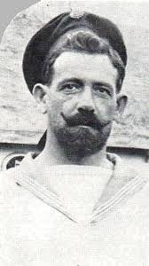
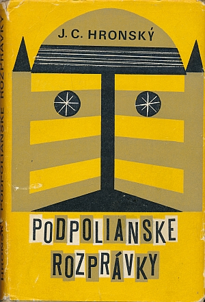

prvý slovenský námorný kapitán, velikán svetových morí
(21. február 1882 Detva - 16. február 1950 Banská Bystrica-Radvaň)

Viac o Júliusovi Jurajovi Thurzovi tu: https://www.detva.sk/download_file_f.php?id=163879
Fotografia: https://www.detva.sk/download_file_f.php?id=163879
rímskokatolícky kňaz, etnograf, múzejník, historik a politik
(8. jún 1875 Dolná Lehota - 12. december 1937 Bojnice (62 rokov))

Viac o Karolovi Antonovi Medveckom tu: https://faradetva.sk/o-nas/vyznamne-osobnosti/karol-anton-medvecky
Fotografia: https://faradetva.sk/o-nas/vyznamne-osobnosti/karol-anton-medvecky
rečník
( 20. jún 1894 Detva - 8. jún 1919 Detva (24 rokov))

Viac o Antonovi Prokopovi tu: https://faradetva.sk/o-nas/vyznamne-osobnosti/anton-prokop
Fotografia: https://faradetva.sk/o-nas/vyznamne-osobnosti/anton-prokop
rímskokatolícky kňaz, náboženský spisovateľ
( 25. jún 1878 Trstená (okr. Tvrdošín)- 11. december 1960 Detva (82 rokov))

Viac o Jánovi Štrbáňovi tu: https://faradetva.sk/o-nas/vyznamne-osobnosti/mons-jan-strban
Fotografia: https://faradetva.sk/o-nas/vyznamne-osobnosti/mons-jan-strban
kresťanský dobrovoľník a kostolník
( 20. august 1905 Drahovce (okr. Piešťany)- 9. máj 1975 Detva (69 rokov))

Viac o Štefanovi Vlkovi tu: https://faradetva.sk/o-nas/vyznamne-osobnosti/stefan-vlk
Fotografia: https://faradetva.sk/o-nas/vyznamne-osobnosti/stefan-vlk
cirkevný hodnostár, teológ, biblista, vysokoškolský pedagóg, rímskokatolícky kňaz
( 14. september 1898 Nemecká (okr. Brezno)- 23. jún 1994 Báč (okr. Dunajská Streda) (95 rokov))

Viac o Jozefi Búdovi tu: https://faradetva.sk/o-nas/vyznamne-osobnosti/prof-thdr-jozef-buda
Fotografia: https://faradetva.sk/o-nas/vyznamne-osobnosti/prof-thdr-jozef-buda
rímskokatolícky kňaz, kanonik, historik, pedagóg, publicista
( 7.októbra 1915 Detva- 2. septembra 1992 Dunajská Lužná (okr. Senec) (76 rokov))

Viac o Imrichovi Ďuricovi tu: https://faradetva.sk/o-nas/vyznamne-osobnosti/imrich-durica
Fotografia: https://faradetva.sk/o-nas/vyznamne-osobnosti/imrich-durica
rímskokatolícky kňaz, farár
(30. január 1927 Sučany (okr. Martin) -17. február 1993 Handlová (okr. Prievidza) (66 rokov))

Viac o Jozefovi Závodskom tu: https://faradetva.sk/o-nas/vyznamne-osobnosti/jozef-zavodsky
Fotografia: https://faradetva.sk/o-nas/vyznamne-osobnosti/jozef-zavodsky
dramatik, básnik a prekladateľ
( 8. apríl 1909 Závodie - 30. január 1983 Bratislava (73 rokov))

Viac o Štefanovi Králikovi tu: https://sk.wikipedia.org/wiki/%C5%A0tefan_Kr%C3%A1lik
Fotografia: https://www.litcentrum.sk/autor/stefan-kralik/zivotopis-autora
spisovateľ, publicista, historik, prekladateľ a exilový pracovník
( 8. december 1914 Detva - 1. február 2019 Unterhaching, Nemecko (104 rokov))

Viac o Imrichovi Kružliakovi tu: https://sk.wikipedia.org/wiki/Imrich_Kru%C5%BEliak
Fotografia: https://www.litcentrum.sk/autor/imrich-kruzliak/zivotopis-autora
novinár, dramatik, publicista, pedagóg, redaktor, prekladateľ a ľudový rozprávač
( 5. december 1917 Zvolen - 8. august 1977 Bratislava (59 rokov))

Viac o Ľudovi Zelienkovi tu: https://sk.wikipedia.org/wiki/%C4%BDudo_Zelienka
Fotografia: https://www.litcentrum.sk/autor/ludo-zelienka/zivotopis-autora
spisovateľ, učiteľ, redaktor
(4. júl 1926 —12. október 2015 (89 rokov))

Viac o Ondrejovi Bartošovi tu: https://www.litcentrum.sk/autor/ondrej-bartos
Fotografia: https://www.litcentrum.sk/autor/ondrej-bartos
zakladateľ bryndziarstva a syrárstva na Slovensku a prvej bryndziarne v Detve
(1759 —1835)

Viac o Jánovi Vagačovi a rodine Vagačovcov tu: https://vagacovdom.sk/vagacovci/
Fotografia: https://vagacovdom.sk/vagacovci/
lekárka onkologička a vedeckovýskumná pracovníčka
(4. júl 1926 — 12. október 2015 (89 rokov))
Viac o Márii Slabeyciusovej tu: https://sk.wikipedia.org/wiki/M%C3%A1ria_Slabeyciusov%C3%A1
slovenský dôstojník a partizánsky veliteľ
( 4. máj 1911 Detva-Kriváň - 11. august 1976 Levice (65 rokov))
Viac o Petrovi Kružliakovi tu: https://sk.wikipedia.org/wiki/Peter_Kru%C5%BEliak
organizátor literárneho života, náboženský spisovateľ, redaktor, prekladateľ, prírodovedec, botanik
( 9. november 1841 Svätý Anton - 28. október 1916 Sása (74 rokov))

Viac o Andrejovi Truchlom-Sytnianskom tu: https://sk.wikipedia.org/wiki/Andrej_Truchl%C3%BD-Sytniansky
Fotografia: https://www.knihydominikani.sk/hlavna_schemhladat_3?kpcmeno=truchlyandrej
Námetom je autobiografický, reálny ľúbostný zážitok - a to láska mladého Sládkoviča k Antónii Júlii Sekovičovej, dcére panského úradníka z Honseku a básnikovej budúcej manželke. Tento príbeh, ktorý oslavuje zmysel pre spravodlivosť, je inšpirovaný jánošíkovskou a korvínovskou folklórnou tradíciou.

Viac o lyricko-epickej básni Detvan tu: https://sk.wikipedia.org/wiki/Detvan_(Sl%C3%A1dkovi%C4%8D)
Fotografia: https://www.detva.sk/download_file_f.php?id=298024
monografiou vôbec menujeme taký osobitný spis, ktorý opisuje jeden jediný odsek istej vedy sťa by zaokrúhlený celok.

Viac o Monografii Detva, ktorú napísal Karol Anton Medvecký tu: https://zlatyfond.sme.sk/dielo/1743/Medvecky_Detva/bibliografia
Fotografia: https://www.detva.sk/download_file_f.php?id=298024
Útla publikácia o založení prvej bryndziarne a o výrobe i druhoch bryndze.

Fotografia: https://www.detva.sk/download_file_f.php?id=298024
Detvianska nátura podáva obraz o Podpolianskom ľude, ktorý mal vždy zdravý zmysel pre humor.

Fotografia: https://www.detva.sk/download_file_f.php?id=298024
Svojrázne a neopakovateľné je prostredie pod Poľanou. Práve sem začlenil autor hrdinov svojich poviedok a zobrazuje podpolianskeho človeka v jeho nefalšovanej originalite, plného vitality a rozvážnosti...

Viac o knihe Podpolianke rozprávky, ktorú napísal Jozef Cíger Hronský tu: https://studovnaliteratury.sav.sk/podpolianske-rozpravky/
Fotografia: https://www.detva.sk/download_file_f.php?id=298024
Publikácia s rozsiahlou obrazovou časťou, ktorá zobrazuje prácu, zábavu, zvyky a prírodné scenérie krajiny pod Poľanou.

Fotografia: https://www.detva.sk/download_file_f.php?id=298024
zostavovatelia Švehlák Svetozár a Kovačovič Igor; všestraná monografia/zborník o rázovitej časti Slovenska spracovaná kolektívom pripravovateľov Folklórnych slávností pod Poľanou, v Detve. Zaoberá sa predovšetkým folkloristickým výskumom

Viac o knihe Podpoľanie tradície a súčasnosť tu: https://kniznica.hrinova.sk/cgi-bin/koha/opac-detail.pl?biblionumber=7984
Fotografia: https://www.detva.sk/download_file_f.php?id=298024
Publikácia o histórii obrábania pôdy v Detve od jej vzniku a počas 25 rokov existencie JRD.

Fotografia: https://www.detva.sk/download_file_f.php?id=298024
Monografia Detva, ktorú v roku 1988 vydal Ján Zemko a kolektív, predstavuje v tomto kontexte kľúčové vedecké dielo, ktoré v sebe syntetizuje poznatky z histórie, geografie, sociológie a etnografie. Táto publikácia, vydaná renomovaným martinským vydavateľstvom Osveta, sa stala druhým významným pilierom v trojdielnej línii komplexných monografií mesta, pričom vyplnila kritickú medzeru medzi národopisne ladeným dielom Karola Antona Medveckého z roku 1905 a moderným interdisciplinárnym spracovaním z roku 2018.

Viac o knihe Detva od Jána Zemka a kol. tu: https://kniznica.hrinova.sk/cgi-bin/koha/opac-detail.pl?biblionumber=7984
Fotografia: https://www.detva.sk/download_file_f.php?id=298024
Reedícia prvej monografie o Detve, pôvodne vydanej v roku 1905 v Ružomberku v náklade 1 000 ks. Medvecký zostavil hodnotnú monografiu, v ktorej sústredil dostupné faktografické údaje o histórii, prírodnom prostredí, ako aj o zvykoch a spôsobe života obyvateľov Detvy.

Fotografia: https://www.detva.sk/download_file_f.php?id=298024
Štefan Vlk, rodák z Drahoviec, ktorý prežil v Detve takmer 40 rokov svojho života bol vyhľadávaným poradcom v problémoch každodenného života. Bol to usilovný a pracovitý človek, ktorý vďaka tomu, že svoje presvedčenie a vieru dokazoval svojím životom, požíval u obyvateľov Detvy opravdivú úctu a dôveru...

Fotografia: https://www.detva.sk/download_file_f.php?id=298024
...zastav sa a zahľaď do diaľav, počúvaj a obdivuj. Všetko máš ako na dlani... Všetko sa zdá byť na prvý pohľad také bezbranné, očarujúce... Nedokážeš uspokojiť svoju myseľ a túžbu po poznaní. A tak čoraz nástojčivejšie, najskôr šepky, vzápätí hlasnejšie sa Ti žiada odpovedať na otázku: Aká si dnešná Poľana?

Fotografia: https://www.detva.sk/download_file_f.php?id=298024
na území bývalej Zvolenskej stolice v minulosti vznikli a produkovali svoje výrobky viaceré sklárne. Samostatnú kapitolu tvoria sklárne Vígľašského panstva, ktoré viac ako dvesto rokov pôsobili na jeho teritóriu. Dnes už iba názvy obcí upozorňujú na niekdajšiu hutnícko-sklársku výrobu.

Fotografia: https://bookbot.sk/a/376921
predmetom práce je skúmanie dejín elementárneho školstva v Detve a jej okolí, ako aj jeho špecifík, vyplývajúcich najmä z charakteristického lazníckeho osídlenia v tejto oblasti.
zborník príspevkov z konferencie Tradície, premeny a súčasnosť (Od rurálneho k urbánnemu?) usporiadanej pri príležitosti 100. výročia vydania prvej monografie o Detve. Jednotlivé príspevky odzrkadľujú poznatky z oblasti histórie, etnológie, výtvarného umenia, hudby, školstva, architektúry, osídlenia, poľnohospodárstva, lesného hospodárstva a ochrany prírody.

Fotografia: https://www.detva.sk/download_file_f.php?id=298024
katalóg archeologických prameňov z doby bronzovej, halštatskej, laténskej a rímskej, z obdobia sťahovania národov a včasného stredoveku.

Fotografia: https://www.detva.sk/download_file_f.php?id=298024
Publikácia autentických fotografií Detvy z prvej polovice 20. storočia.

Fotografia: https://bookbot.sk/g/590238
Monografia o hodnotách krajiny Detvy, s dôrazom na význam historických krajinných štruktúr.

Fotografia: https://www.detva.sk/download_file_f.php?id=298024
Zborník architektonických prác študentov architektúry STU Bratislave prezentuje vízie mladých odborníkov o možnostiach rozvoja mesta Detva.

Fotografia: https://www.detva.sk/download_file_f.php?id=298024
Jeden z najvýznamnejších medzinárodných festivalov tradičnej ľudovej kultúry na Slovensku, ktorý sa od roku 1966 koná v unikátnom detvianskom prírodnom amfiteátri

Viac o folkórnych slávnostiach pod Poľanou v Detve tu: https://www.festivaldetva.sk/o-festivale/
Fotografia: Tomáš Belko
Najvýznamnejšia vojenská udalosť v meste. Išlo o jedinú oficiálnu prehliadku povstaleckých a partizánskych jednotiek (vrátane francúzskych partizánov) počas SNP. Mesto si túto udalosť pravidelne pripomína spomienkovými slávnosťami (v roku 2025 sa konal 81. ročník).

Viac o partizánskej prehliadke v Detve tu: https://www.detva.sk/spomienka-na-partizansku-prehliadku-oznam/mid/428789/.html
Fotografia: https://www.podpolanie.sk/sk/kadeco_z_podpolania/17/Za_hrdinami_minulosti_%E2%80%93_pamatnik_a_tabule
Detva bola založená Ladislavom Csákym ako poddanská obec Vígľašského panstva.

Viac o založení mesta Detva tu: https://www.detva.sk/z-historie-detvy-oznam/mid/277667/.html alebo tu https://region.detva.biz/oregione/historia/files/zalozenie.html
Fotografia: https://region.detva.biz/oregione/historia/files/zalozenie.html
Oslavy založenia mesta spojené s jarmokom, partizánskou prehliadkou a mnohým ďalším.

Viac o Detvianskom jarmoku tu: https://www.detva.sk/akcia/dni-mesta-detva-2025--detviansky-jarmok/mid/428790/.html#m_428790
Fotografia: https://www.podpolanie.sk/sk/podujatia/302
Konajú sa každoročne v máji pri Pomníku padlých.

Viac o oslavách víťazstva u tu: https://www.detva.sk/oznamy/detva-si-pripomenula-80--vyrocie-vitazstva-nad-fasizmom.html?utm_source=www.seznam.cz&utm_medium=sekce-z-internetu
Fotografia: https://www.detva.sk/detva-si-pripomenula-den-vitazstva-nad-fasizmom-oznam/mid/428789/.html
Unikátna technika vyšívania na ráme, typická pre detviansky kroj.

Viac o Detvianskej výšivke tu: https://dlu.sk/detvianska-vysivka/
Fotografia: https://dlu.sk/detvianska-vysivka/
Fujara a fujarová hudba (zapísaná aj v UNESCO) má v regióne Podpoľania silné korene.

Viac o fujare tu: https://sk.wikipedia.org/wiki/Fujara
Fotografia https://dlu.sk/
Drevené maľované kríže (náhrobné i prícestné), ktoré sú zapísané v celoslovenskom zozname od roku 2017.

Viac o detvianskych vyrezávaných krížoch tu: https://faradetva.sk/o-nas/sakralne-objekty/detvianske-krize
Fotografia: Tomáš Belko
Betlehemstvo v Detve je tradičná vianočná obchôdzka, pri ktorej betlehemci v krojoch a s prenosnými drevenými betlehemami navštevujú domy, spievajú koledy a vinšujú, čím udržiavajú živú podpoliansku tradíciu z pokolenia na pokolenie.

Viac o betlehemstve tu: https://sk.wikipedia.org/wiki/Jasli%C4%8Dk%C3%A1r
Fotografia: Tibor Vrťo